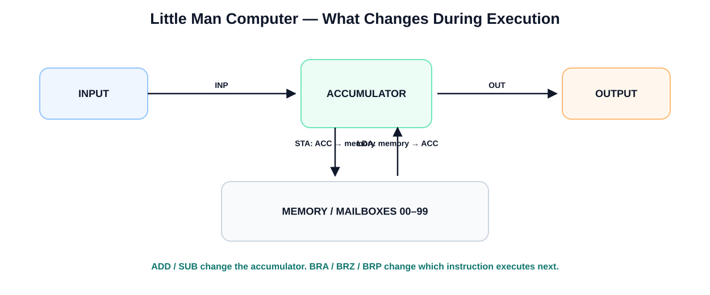
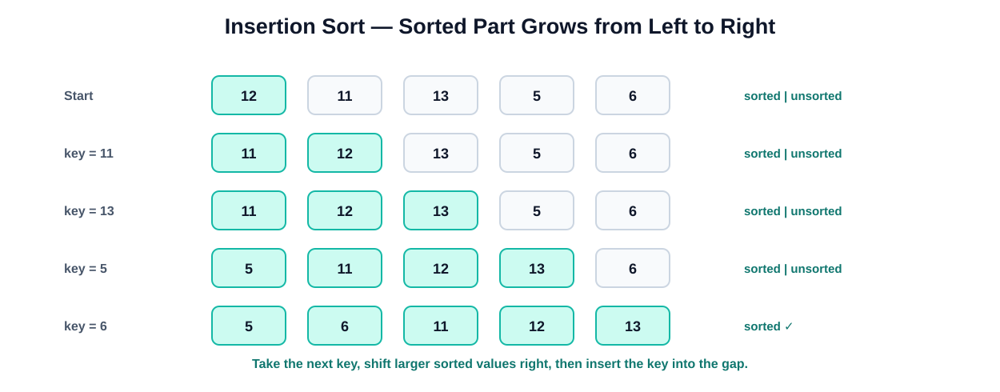
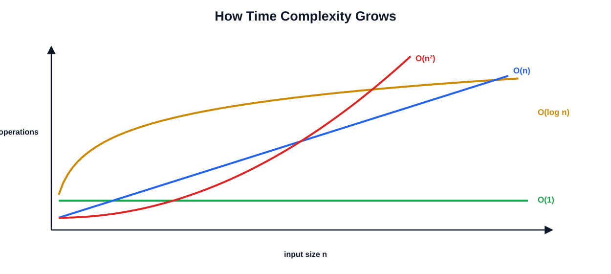
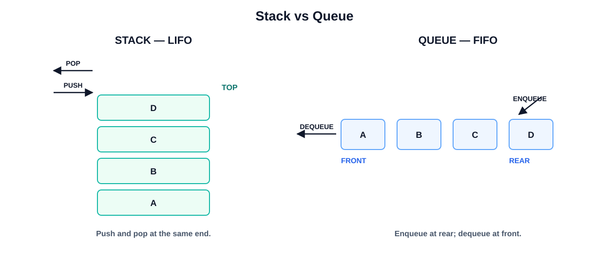
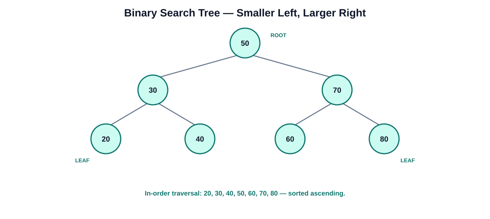

Paper 3 — Programming Exam Trainer
Keep the theory, but revise it in the same way the exam uses it: read → trace → complete → write → debug → optimise. The original theory and 20 practice tasks are retained, with pseudocode guidance, diagrams, videos, diagnostic practice and a mini mock added around them.
How to use this guide
- ⚠ WARNING Common mistake — marks are often lost here.
- 📌 DEFINITION Learn technical terms precisely.
- 📋 RULE Apply the procedure step by step.
- ✅ EXAM TIP Convert knowledge into an examiner-ready response.
- 🧩 TASK Solve first; reveal the answer only after attempting it.
Contents
- Start
- Diagnostic Test
- Pseudocode Essentials
- Ch.1 — Programming & Logic
- LMC
- Trace Tables
- Expert Systems / Prolog
- Ch.2 — Algorithms & Data Structures
- Arrays
- Bubble Sort
- Insertion Sort
- Binary Search
- Efficiency
- Stack & Queue
- Binary Tree
- Ch.3 — Testing & Quality
- Errors
- Testing
- Optimisation
- Good Style
- Ch.4 — Web Programming
- HTML
- Forms
- CSS
- Form Processing
- Exam Practice
- Mini Mock
- Topic Map
- Warnings
Paper 3 Readiness Diagnostic
Choose one answer for each question. Press Check score to see which sections should be revised first.
1. Which LMC instruction copies a value from memory into the accumulator?
2. Which is the safest pseudocode assignment form used in the reference?
3. Valid range is 3–5. Which value is extreme data?
4. In a BST, where is a value smaller than the current node placed?
5. In Prolog, which usually starts with an uppercase letter?
6. For a 0-indexed array of length n, the last valid index is:
7. Which sorting algorithm grows a sorted section and inserts a key into it?
8. Which structure is FIFO?
9. Radio buttons in one group should share the same:
10. Replacing repeated multiplication in a loop with a direct power operation mainly improves:
Pseudocode Essentials — Paper 3
Pseudocode Syntax Reference
The supplied Paper 3 reference recommends one consistent style: prefer OUTPUT, use <- for assignment where possible, = for comparison, indent blocks clearly, and remember LENGTH(array) - 1 for the last index of a 0-indexed array.
7-page printable reference supplied for this revision page: conventions, operators, selection, loops, arrays, strings, functions, stack operations and exam templates.
Variables, input and output
DECLARE age : INTEGER
DECLARE found : BOOLEAN
INPUT age
total <- 0
OUTPUT "Age:", ageOperators
= equal
<> not equal
AND OR NOT
MOD
INT(...)
LENGTH(...)Selection
IF score >= 50 THEN
OUTPUT "Pass"
ELSE
OUTPUT "Fail"
ENDIFIteration
FOR i FROM 0 TO 9
OUTPUT i
ENDFOR
WHILE attempts < 3
...
ENDWHILECompound-condition mistake
Do not write IF month = 1 OR 2 OR 12. Write each comparison explicitly: month = 1 OR month = 2 OR month = 12.
Arrays and reusable patterns
FOR i FROM 0 TO LENGTH(arr) - 1
OUTPUT arr[i]
ENDFOR
total <- 0
FOR i FROM 0 TO LENGTH(scores) - 1
total <- total + scores[i]
ENDFOR
maximum <- scores[0]
FOR i FROM 1 TO LENGTH(scores) - 1
IF scores[i] > maximum THEN
maximum <- scores[i]
ENDIF
ENDFOR| Need to... | Think... |
|---|---|
| Make a decision | IF / ELSE |
| Repeat a known number of times | FOR |
| Repeat while a condition is true | WHILE |
| Visit every array element | FOR + index |
| Visit a 2D grid | Nested FOR loops |
| Count matching items | counter <- 0; IF ... counter <- counter + 1 |
| Calculate total | total <- total + arr[i] |
| Find middle index | INT((low + high) / 2) |
Task 21 — Complete the selection
Complete the missing condition so the program recognises a 4-4-2 football formation.
INPUT def
INPUT mid
INPUT fwd
IF ______________________________ THEN
OUTPUT "4-4-2"
ENDIFShow answer / marking idea
def = 4 AND mid = 4 AND fwd = 2. Each comparison must be written explicitly.Task 22 — Choose the loop
You need to visit every element in a 0-indexed array scores. Write the safest FOR-loop header.
Show answer / marking idea
FOR i FROM 0 TO LENGTH(scores) - 1.Chapter 1 — Programming & Logic
1.1 Assembly Language & LMC
Assembly Language (2GL)
A low-level programming language using mnemonics that map almost directly to machine-code instructions. An assembler translates the mnemonics into machine code.
Little Man Computer
A simplified educational CPU model with 100 memory cells (00–99), one accumulator and a small instruction set. It is used to understand instruction execution and assembly-language logic.

| Mnemonic | Opcode | Operation | Effect |
|---|---|---|---|
INP | 901 | Input | ACC ← input |
OUT | 902 | Output | Display ACC |
LDA xx | 5xx | Load | ACC ← Memory[xx] |
STA xx | 3xx | Store | Memory[xx] ← ACC |
ADD xx | 1xx | Add | ACC ← ACC + Memory[xx] |
SUB xx | 2xx | Subtract | ACC ← ACC − Memory[xx] |
BRA xx | 6xx | Branch always | Jump to xx |
BRZ xx | 7xx | Branch if zero | Jump if ACC = 0 |
BRP xx | 8xx | Branch if positive | Jump if ACC ≥ 0 |
HLT | 000 | Halt | Stop |
DAT xx | — | Data declaration | Reserve a memory cell |
★ Example — Add two inputs
INP
STA NUM1
INP
ADD NUM1
OUT
HLT
NUM1 DAT 0★ Example — Count down
INP
STA COUNT
NEXT LDA COUNT
BRZ END
OUT
SUB ONE
STA COUNT
BRA NEXT
END HLT
COUNT DAT 0
ONE DAT 1Task 1 — Analyse this LMC program
Trace the program with input 5. What does it output and what does it calculate?
INP
STA N
LDA ZERO
STA SUM
LOOP LDA N
BRZ END
ADD SUM
STA SUM
LDA N
SUB ONE
STA N
BRA LOOP
END LDA SUM
OUT
HLT
N DAT 0
SUM DAT 0
ONE DAT 1
ZERO DAT 0Show answer / marking idea
1 + 2 + ... + N. With input 5 the output is 15.Common LMC mistakes
BRZ checks the accumulator. BRP includes zero. Store values that must survive later instructions. Track changed memory cells and output at the exact instruction where it occurs.
1.2 Trace Tables
Trace Table
A method of manually executing an algorithm step by step and recording variable changes and outputs. Paper 3 can require a partially completed trace table rather than asking for a definition.
- Create one column for each value the question asks you to track.
- Execute the instructions in exact order, including loops and branches.
- If the mark scheme/table convention leaves unchanged values blank, only enter values when they change.
- Write output only when an OUTPUT / PRINT instruction executes.
★ Find maximum
nums <- [3,7,2,9,5]
maximum <- nums[0]
FOR i FROM 1 TO 4
IF nums[i] > maximum THEN
maximum <- nums[i]
ENDIF
ENDFOR
OUTPUT maximum| i | nums[i] | maximum | output |
|---|---|---|---|
| — | — | 3 | |
| 1 | 7 | 7 | |
| 2 | 2 | ||
| 3 | 9 | 9 | |
| 4 | 5 | ||
| 9 |
Task 2 — Complete the trace
Trace x and y, then state the output.
x <- 10
y <- 3
WHILE y > 0
x <- x - y
y <- y - 1
ENDWHILE
OUTPUT xShow answer / marking idea
Task 3 — Nested-loop trace
Trace the final value of result.
result <- 0
FOR i FROM 1 TO 3
FOR j FROM 1 TO i
result <- result + 1
ENDFOR
ENDFOR
OUTPUT resultShow answer / marking idea
1.3 Expert Systems & Prolog
Expert System
A computer system that simulates decision-making in a specialised domain. Core parts include a knowledge base of facts and rules, an inference engine, a user interface and often an explanation facility.
% facts
position(bolat, defender).
injured(bolat).
% rule / query ideas
available(X) :- position(X, defender), NOT injured(X).
?- position(X, defender).Facts / atoms
- Usually begin with lowercase letters.
- Describe stored relationships or properties.
Variables
- Usually begin with uppercase letters.
- Used to ask for values that satisfy a query/rule.
Task 4 — Weather clothing advisor
Write facts/rules for weather and recommend a coat, umbrella or sunscreen. Example start: temperature(monday, cold).
Show answer / marking idea
wear_coat(Day) :- temperature(Day, cold), weather(Day, raining). Other logically correct rules are valid.Detailed theory retained: expert-system components, uses & examples
Core components
- Knowledge base: facts and rules describing the specialist domain.
- Inference engine: applies the rules to facts to derive conclusions or answer queries.
- User interface: accepts input and presents advice/conclusions.
- Explanation module: can explain how or why a conclusion was reached.
Typical applications
- Medical diagnosis
- Technical troubleshooting
- Finance / loan or fraud decisions
- Agriculture / pest or soil diagnosis
Animal-identification example
has_feathers(tweety).
can_fly(tweety).
has_feathers(pingu).
swims(pingu).
has_fur(rex).
barks(rex).
is_bird(Animal) :-
has_feathers(Animal),
can_fly(Animal).
is_penguin(Animal) :-
has_feathers(Animal),
swims(Animal).
is_dog(Animal) :-
has_fur(Animal),
barks(Animal).
?- is_bird(tweety).
?- is_dog(X).Medical-diagnosis example
symptom(john, fever).
symptom(john, cough).
symptom(mary, headache).
symptom(mary, sneezing).
has_flu(Patient) :-
symptom(Patient, fever),
symptom(Patient, cough).
has_cold(Patient) :-
symptom(Patient, headache),
symptom(Patient, sneezing).Chapter 2 — Algorithms & Data Structures
2.1 Arrays (1D & 2D)
Array
An ordered collection of elements accessed by index. In Paper 3, array skills are usually practical: traverse, search, total, update, swap, or process a 2D grid.
| Term | Meaning | Example |
|---|---|---|
| Lower bound | First valid index | 0 in a 0-indexed array |
| Upper bound | Last valid index | LENGTH(arr) - 1 |
| Element | One stored value | scores[2] |
| 2D index | Row and column | grid[row,col] |
★ Traverse and total
total <- 0
FOR i FROM 0 TO LENGTH(scores) - 1
total <- total + scores[i]
ENDFOR
OUTPUT total★ 2D array
FOR row FROM 0 TO ROWS(grid) - 1
FOR col FROM 0 TO COLUMNS(grid) - 1
OUTPUT grid[row,col]
ENDFOR
ENDFORTask 5 — Array operations
Given marks = [55,72,48,91,65,80,37], write pseudocode to find the highest mark, count marks above 60, and output all marks in reverse order.
Show answer / marking idea
Task 6 — 2D array averages
A 3×4 array stores grades for 3 students. Write pseudocode to calculate the average for each row.
Show answer / marking idea
total <- 0 at the start of each row; divide each row total by 4.Detailed theory retained: bounds, indexing & 2D examples
| Term | Definition | Example for 5 items |
|---|---|---|
| Lower bound | Index of first element | 0 in a 0-indexed array |
| Upper bound | Index of last element | 4 |
| Size / length | Total number of elements | 5 |
| Index / subscript | Position used to access an element | scores[0] … scores[4] |
scores <- [72,85,91,64,78]
OUTPUT scores[0]
OUTPUT scores[4]
grid <- [
[1,2,3,4],
[5,6,7,8],
[9,10,11,12]
]
OUTPUT grid[1,2]2.2 Bubble Sort
Bubble Sort
Repeatedly compares adjacent items and swaps them when they are in the wrong order. After each complete pass, the largest remaining value has moved toward its final position at the end.
FOR i FROM 0 TO LENGTH(arr) - 2
FOR j FROM 0 TO LENGTH(arr) - 2 - i
IF arr[j] > arr[j+1] THEN
temp <- arr[j]
arr[j] <- arr[j+1]
arr[j+1] <- temp
ENDIF
ENDFOR
ENDFORKey facts
Worst/average time is O(n²). A swapped flag can stop early on already sorted data. Maximum full passes: n−1.
Task 7 — Bubble-sort trace
Show each pass for [5,1,4,2,8].
Show answer / marking idea
Detailed worked example retained: sort [64, 34, 25, 12, 22]
Initial: [64, 34, 25, 12, 22]
Pass 1
64>34 → [34,64,25,12,22]
64>25 → [34,25,64,12,22]
64>12 → [34,25,12,64,22]
64>22 → [34,25,12,22,64]
Pass 2
34>25 → [25,34,12,22,64]
34>12 → [25,12,34,22,64]
34>22 → [25,12,22,34,64]
Pass 3
25>12 → [12,25,22,34,64]
25>22 → [12,22,25,34,64]
Pass 4
12<22 → no swap
Sorted: [12,22,25,34,64]After k complete passes, the last k items are in their final positions. With a swapped flag, an already sorted list can stop early.
2.3 Insertion Sort
Insertion Sort
Builds a sorted section one item at a time. The next value becomes the key; larger sorted values are shifted right until the key can be inserted in its correct position.

FOR i FROM 1 TO LENGTH(arr) - 1
key <- arr[i]
j <- i - 1
WHILE j >= 0 AND key < arr[j]
arr[j+1] <- arr[j]
j <- j - 1
ENDWHILE
arr[j+1] <- key
ENDFORTask 8 — Insertion-sort trace
Trace insertion sort on [29,10,14,37,13] and count shifts.
Show answer / marking idea
Detailed theory retained: full insertion-sort example & Bubble vs Insertion
Start: [12 | 11,13,5,6]
key=11 → shift 12 → [11,12 | 13,5,6]
key=13 → no shift → [11,12,13 | 5,6]
key=5 → shift 13,12,11 → [5,11,12,13 | 6]
key=6 → shift 13,12,11 → [5,6,11,12,13]| Bubble Sort | Insertion Sort |
|---|---|
| Compares adjacent pairs | Chooses a key and inserts it into the sorted part |
| Largest value bubbles to the end of each pass | Sorted prefix grows left-to-right |
| O(n²) average/worst | O(n²) average/worst; can be efficient on nearly sorted data |
| In-place | Stable and in-place |
2.4 Binary Search
Binary Search
An efficient search for a sorted array. Compare the target with the middle element and eliminate half of the remaining search interval each step.
The array must be sorted
Applying binary search to unsorted data can give incorrect results.
low <- 0
high <- LENGTH(arr) - 1
found <- FALSE
index <- -1
WHILE low <= high AND found = FALSE
mid <- INT((low + high) / 2)
IF arr[mid] = target THEN
found <- TRUE
index <- mid
ELSE IF arr[mid] > target THEN
high <- mid - 1
ELSE
low <- mid + 1
ENDIF
ENDWHILE| Feature | Linear search | Binary search |
|---|---|---|
| Sorted array required? | No | Yes |
| Worst time | O(n) | O(log n) |
| Best time | O(1) | O(1) |
Task 9 — Binary-search trace
Find 17 in [1,4,7,10,14,17,21,25,30]. Show low, high and mid.
Show answer / marking idea
Detailed worked examples retained: found & not found
Find 33 in [2,5,8,12,16,23,33,42,56,70]
| Step | low | high | mid | arr[mid] | Action |
|---|---|---|---|---|---|
| 1 | 0 | 9 | 4 | 16 | low=5 |
| 2 | 5 | 9 | 7 | 42 | high=6 |
| 3 | 5 | 6 | 5 | 23 | low=6 |
| 4 | 6 | 6 | 6 | 33 | found |
Search for 50 in [3,7,11,18,25,37,44,60]
18 → search right; 37 → search right; 44 → search right; 60 → search left; then low > high, so return not found / -1.
For n = 1000, binary search needs only about 10 comparisons in the worst case, while linear search can need 1000.
2.5 Algorithm Efficiency
Time efficiency
How the number of operations grows as input size n increases.
Space efficiency
How additional memory requirements grow as input size n increases.

| Complexity | Typical pattern |
|---|---|
| O(1) | Fixed number of operations / direct array access |
| O(log n) | Search space repeatedly halved |
| O(n) | Single traversal |
| O(n²) | Two full nested loops / simple quadratic sorts |
Task 10 — Identify complexity
State the complexity: (a) linear search, (b) bubble sort, (c) direct array access, (d) binary search.
Show answer / marking idea
Detailed theory retained: full Big O reference
| Notation | Name | Example | Approx. for n=100 |
|---|---|---|---|
| O(1) | Constant | Direct array access | 1 |
| O(log n) | Logarithmic | Binary search | ~7 |
| O(n) | Linear | Linear search / one loop | 100 |
| O(n log n) | Linearithmic | Efficient comparison sorts | ~665 |
| O(n²) | Quadratic | Bubble / insertion sort, full nested loops | 10,000 |
| O(2ⁿ) | Exponential | Some brute-force / recursive problems | Very large |
- Single loop over n → O(n)
- Two nested n loops → O(n²)
- Halve search space each step → O(log n)
- Fixed number of steps → O(1)
2.6 Stack & Queue
Stack
LIFO — Last In, First Out. PUSH and POP use the top of the stack.
Queue
FIFO — First In, First Out. ENQUEUE adds at the rear; DEQUEUE removes from the front.

| Stack | Queue |
|---|---|
| PUSH, POP, PEEK/TOP | ENQUEUE, DEQUEUE, FRONT |
| Undo/redo, call stack, bracket checking | Print queue, scheduling, buffers |
| Underflow: pop empty stack | Underflow: dequeue empty queue |
Task 11 — Stack trace
Starting empty: PUSH 5 → PUSH 3 → PUSH 8 → POP → PUSH 2 → POP → PEEK.
Show answer / marking idea
Task 12 — Queue trace
ENQUEUE A → ENQUEUE B → DEQUEUE → ENQUEUE C → ENQUEUE D → DEQUEUE → DEQUEUE.
Show answer / marking idea
Detailed theory retained: operations, overflow/underflow & applications
| Stack operation | Meaning | Queue operation | Meaning |
|---|---|---|---|
| PUSH(x) | Add to top | ENQUEUE(x) | Add to rear |
| POP() | Remove/return top | DEQUEUE() | Remove/return front |
| PEEK/TOP() | View top | PEEK/FRONT() | View front |
| isEmpty() | Check empty | isEmpty() | Check empty |
Overflow occurs when adding to a full fixed-capacity structure. Underflow occurs when removing from an empty structure.
Stack applications
- Undo/redo
- Browser back history
- Function call stack
- Bracket checking
- Expression evaluation
Queue applications
- Print spooling
- CPU scheduling
- Keyboard/input buffers
- Network packet queues
- Ticket systems
2.7 Binary Tree / BST
Binary Tree
A hierarchical structure where a node has at most two children.
Binary Search Tree
For each node, smaller values are in the left subtree and larger values are in the right subtree.

- Start at the root.
- New value smaller → go left.
- New value larger → go right.
- Repeat until an empty position is found.
Tree traversals
In-order = Left → Root → Right. For a valid BST, in-order traversal produces the values in ascending order.
Task 13 — Build a BST
Insert: 45, 22, 77, 11, 33, 60, 90, 55. Give the in-order traversal and comparisons needed to find 55.
Show answer / marking idea
Detailed theory retained: insertion path & all three traversals
For input 50,30,70,20,40,60,80:
- 50 becomes root.
- 30 goes left of 50.
- 70 goes right of 50.
- 20 goes left of 30.
- 40 goes right of 30.
- 60 goes left of 70.
- 80 goes right of 70.
| Traversal | Order | Result |
|---|---|---|
| In-order | Left → Root → Right | 20,30,40,50,60,70,80 |
| Pre-order | Root → Left → Right | 50,30,20,40,70,60,80 |
| Post-order | Left → Right → Root | 20,40,30,60,80,70,50 |
Chapter 3 — Testing, Errors & Code Quality
3.1 Types of Errors
| Type | Meaning | Example |
|---|---|---|
| Syntax error | Code violates the language grammar and cannot be interpreted/compiled correctly. | Missing bracket / invalid syntax |
| Runtime / execution error | Code starts but fails while executing. | Division by zero, out-of-range index, type mismatch |
| Logic error | Program runs but gives an incorrect result. | Wrong formula, condition or loop range |
Logic errors are silent
They are normally discovered by testing outputs against expected results, not by a compiler message.
Task 14 — Classify the errors
(a) pint("Hello") in Python, (b) program outputs average 200 instead of 20, (c) grades[5] when only indices 0–2 exist.
Show answer / marking idea
Detailed examples retained
# Syntax error
if x 5:
print("yes")
# Runtime / execution error
total = 100
count = 0
average = total / count
# Logic error
radius = 5
area = 3.14159 * radius
# intended: 3.14159 * radius * radiusSyntax errors are normally caught before successful execution; runtime errors occur while executing; logic errors require testing because the program can run and still be wrong.
3.2 Testing Methods
Typical valid data inside the allowed range.
Valid data at the boundary values.
Invalid range/type data that should be rejected.
| Valid age 0–120 | Type | Expected |
|---|---|---|
| 25 | Normal | Accepted |
| 0 | Extreme | Accepted |
| 120 | Extreme | Accepted |
| -1 | Erroneous | Error |
| "hello" | Erroneous | Error |
Task 15 — Design a test plan
A mark must be an integer 0–100 and maps to A:90–100, B:75–89, C:60–74, D:0–59. Design normal, extreme and erroneous tests.
Show answer / marking idea
Detailed test plan retained: age 0–120
| # | Type | Input | Expected | Reason |
|---|---|---|---|---|
| 1 | Normal | 25 | Accepted | Typical valid age |
| 2 | Normal | 45 | Accepted | Another typical value |
| 3 | Extreme | 0 | Accepted | Minimum valid boundary |
| 4 | Extreme | 120 | Accepted | Maximum valid boundary |
| 5 | Erroneous | -1 | Error | Below minimum |
| 6 | Erroneous | 121 | Error | Above maximum |
| 7 | Erroneous | "hello" | Error | Wrong type |
| 8 | Erroneous | 25.7 | Error | Decimal when integer expected |
3.3 Code Optimisation
Paper 3 can ask you to identify inefficient code, improve it and explain why the change improves efficiency.
Repeated work
Lp <- 1
FOR i FROM 1 TO K
Lp <- Lp * L
ENDFORDirect operation
Lp <- L ^ KFewer repeated multiplications / fewer iterations.
| Optimisation idea | Why it helps |
|---|---|
| Replace an unnecessary repeated loop with a direct expression | Reduces repeated operations |
| Remove an unnecessary intermediate variable | Simplifies code and can reduce storage/assignments |
| Move repeated code into a function/procedure | Reduces duplication and improves maintainability |
| Stop a search once the answer is found | Avoids unnecessary later iterations |
Task 23 — Optimise repeated multiplication
A program calculates L^K by multiplying L by itself K times. State one improvement and explain the efficiency gain.
Show answer / marking idea
L ^ K where permitted. It avoids K repeated multiplications / loop iterations.3.4 Good Programming Style
- Meaningful variable names.
- Comments/documentation where useful.
- Consistent indentation and whitespace.
- Named constants instead of unexplained magic numbers.
- Functions/procedures for reusable logic.
- Avoid duplicated code.
- Validate inputs and handle errors appropriately.
Bad
x=int(input())
y=int(input())
z=x+y
d=z/2Better
score1 <- INPUT
score2 <- INPUT
totalScore <- score1 + score2
averageScore <- totalScore / 2Task 16 — Improve this code
a = int(input())
b = int(input())
c = a + b
d = c / 2
if d >= 50:
print(1)
else:
print(0)Rewrite using better programming style.
Show answer / marking idea
score1, score2, totalScore, averageScore, a named pass threshold, clear indentation/comments, and meaningful output such as "Pass"/"Fail".Detailed theory retained: full good-style checklist
- Meaningful variable names.
- Comments and documentation for non-obvious logic.
- Consistent indentation.
- Avoid magic numbers; use named constants.
- Modular code using functions/procedures.
- Avoid duplication (DRY).
- Keep lines/readability manageable.
- Validate inputs before using them.
Chapter 4 — HTML, CSS & Web Programming
4.1 HTML Basics
HTML
The markup language used to define the structure and meaning of web-page content.
<!DOCTYPE html>
<html lang="en">
<head>
<meta charset="UTF-8">
<title>My Page</title>
<link rel="stylesheet" href="style.css">
</head>
<body>
<h1>Welcome</h1>
<p>Page content</p>
</body>
</html>| Tag | Purpose |
|---|---|
<h1>...<h6> | Headings |
<p> | Paragraph |
<a href=""> | Hyperlink |
<img src=""> | Image |
<table>, <tr>, <th>, <td> | Tables |
<ul>, <ol>, <li> | Lists |
Task 17 — Build an HTML page
Create a school timetable page with heading, a 4-column table (Day, Subject, Teacher, Room), five rows, and a link back to the homepage.
Show answer / marking idea
<a href="..."> link.Detailed theory retained: HTML tag reference & student-profile example
| Tag | Purpose |
|---|---|
<h1>…<h6> | Headings |
<p> | Paragraph |
<a href=""> | Hyperlink |
<img src="" alt=""> | Image |
<ul> / <ol> | List containers |
<li> | List item |
<table> | Table container |
<tr> | Table row |
<th> | Header cell |
<td> | Data cell |
<div> | Block container |
<span> | Inline container |
<br> | Line break |
<strong> | Strong importance / bold presentation by default |
<em> | Emphasis / italic presentation by default |
<!DOCTYPE html>
<html>
<head>
<title>Student Profile</title>
<link rel="stylesheet" href="style.css">
</head>
<body>
<h1>Student Profile</h1>
<img src="photo.jpg" alt="Student photo" width="150">
<h2>Asel Nurova</h2>
<p>Grade: <strong>12A</strong></p>
<h3>Subjects</h3>
<ul>
<li>Computer Science</li>
<li>Mathematics</li>
<li>Physics</li>
</ul>
<a href="index.html">Back to Home</a>
</body>
</html>4.2 HTML Forms
HTML Form
A page section that collects input. The name attribute is particularly important because server-side/client-side processing often identifies submitted fields by name/id.
<form action="register.php" method="POST">
<input type="text" name="studentName" required>
<input type="number" name="matches">
<input type="radio" name="operation" value="encrypt"> Encrypt
<input type="radio" name="operation" value="decrypt"> Decrypt
<button type="submit">Go</button>
</form>Radio group
Radio buttons that belong to the same choice group need the same name value.
Task 18 — Create a quiz form
Include a student-name text field, three multiple-choice questions using radio buttons, a comments textarea, and submit/reset controls.
Show answer / marking idea
name per question, <textarea>, and submit/reset buttons/inputs.Detailed theory retained: complete registration form & input types
<form action="register.php" method="POST">
<label for="fname">First Name:</label>
<input type="text" id="fname" name="firstname" required>
<input type="email" name="email" required>
<input type="number" name="age" min="0" max="120">
<select name="grade">
<option value="11">Grade 11</option>
<option value="12">Grade 12</option>
</select>
<input type="radio" name="gender" value="M"> Male
<input type="radio" name="gender" value="F"> Female
<input type="checkbox" name="interest" value="cs"> CS
<textarea name="notes"></textarea>
<input type="submit" value="Register">
<input type="reset" value="Clear">
</form>| type | Use |
|---|---|
| text | Single-line text |
| Email input | |
| password | Masked input |
| number | Numeric input; can use min/max/step |
| date | Date picker |
| radio | One choice from a group |
| checkbox | Independent on/off choice |
| submit | Submit form |
| reset | Restore defaults |
4.3 CSS Stylesheets
CSS
Controls presentation and layout. It separates visual styling from HTML structure.
h1 {
color: red;
text-decoration: underline;
}
.card {
padding: 16px;
border: 1px solid #ccc;
}| Selector | Example |
|---|---|
| Element | h1 { ... } |
| Class | .card { ... } |
| ID | #header { ... } |
External stylesheet link
<link rel="stylesheet" href="school.css">margin vs padding
Padding is inside the border; margin is outside the border.
Task 19 — Style the timetable
Create CSS with a navy table header, alternating rows, cell borders, centred green title and Arial body font.
Show answer / marking idea
Task 20 — Full web project
Create a two-page school-library site: a homepage with book table, a borrow form page, and one shared external stylesheet.
Show answer / marking idea
Detailed theory retained: properties, selectors and inline/internal/external CSS
| Property | Purpose | Example |
|---|---|---|
| color | Text colour | #333333 |
| background-color | Background colour | #f5f5f5 |
| font-family | Typeface | Arial, sans-serif |
| font-size | Text size | 16px |
| font-weight | Weight | bold |
| text-align | Alignment | center |
| margin | Outside spacing | 10px |
| padding | Inside spacing | 16px |
| border | Border | 1px solid black |
| border-radius | Rounded corners | 8px |
| width / height | Dimensions | 200px |
| display | Layout behaviour | block, flex, none |
<!-- Inline -->
<p style="color:red">Red text</p>
<!-- Internal -->
<style>
p { color: blue; }
</style>
<!-- External -->
<link rel="stylesheet" href="style.css">External CSS is normally best for a multi-page site because one stylesheet can be reused and maintained separately from content.
.student-card {
background-color: white;
border: 1px solid #ddd;
border-radius: 12px;
padding: 24px;
max-width: 400px;
margin: 0 auto;
}4.4 Form Processing & Validation
Recent Paper 3 questions connect HTML fields to script logic. You may need to read a value, validate it, loop over stored values and calculate a result.
PHP-style form value
$matches = $_POST['matches'];
if ($matches < 0) {
echo "Error";
}JavaScript-style value
let matches =
Number(document.getElementById(
"matches"
).value);
if (matches < 0) {
...
}Process an array
totalGoals <- 0
FOR each goal IN goals
totalGoals <- totalGoals + goal
ENDFOR
goalsPerMatch <- totalGoals / matchSumTask 24 — Read, validate and accumulate
A form field is named matches. Write logic to obtain the value, reject negative input, and add valid values to matchSum.
Show answer / marking idea
IF matches < 0 THEN OUTPUT error ELSE matchSum <- matchSum + matches. Exact syntax may vary by allowed scripting language.Exam Practice
Mini Paper 3 — 30 Marks
Suggested: 35–40 minQ1 — LMC & Trace [6]
(a) State the instruction used to load a memory value into ACC. [1]
(b) Trace a supplied loop and complete five highlighted cells. [5]
Marking focus
Q2 — Pseudocode, Testing & Structures [7]
Write an IF/ELSE IF structure for three valid input patterns [4], state one extreme value [1], identify Queue vs Stack from two behaviours [2].
Marking focus
Q3 — Arrays & Insertion Sort [6]
Write a loop to find and replace a value in an array [3]. Complete three missing parts of insertion-sort pseudocode [3].
Marking focus
Q4 — Web Programming [7]
Write two correct HTML inputs [2], link an external CSS file [2], obtain a numeric form value [1], reject a negative value [2].
Marking focus
<link rel="stylesheet" href="...">; correct field retrieval; condition + error output.Q5 — Debug & Optimise [4]
Identify a logic error [1], replace an unnecessary repeated loop with a more direct operation and explain why it is more efficient [2], state one good-style improvement [1].
Marking focus
Quick Reference — Command Words
| Command | What the examiner expects |
|---|---|
| STATE / NAME / IDENTIFY | Specific fact/type; usually no extended explanation. |
| WRITE / COMPLETE | Produce valid code/pseudocode/HTML/Prolog syntax that meets the requirement. |
| EXPLAIN | Fact plus how/why/reason/consequence. |
| TRACE / FILL IN | Follow exact execution and enter the required values at the correct time. |
Topic Frequency — 2023–2026
The 2023–2025 columns retain the previous revision-page mapping. The 2026 column is updated against the May 2026 Paper 3 mark scheme.
| Topic | 2023 | 2024 | 2025 | 2026 | Priority |
|---|---|---|---|---|---|
| LMC / Trace Tables | ✓ | ✓ | ✓ | ✓ | Critical |
| Pseudocode / Control Structures | ✓ | ✓ | ✓ | ✓ | Critical |
| HTML / Forms / Web Processing | ✓ | ✓ | ✓ | ✓ | Critical |
| Arrays & Loops | ✓ | ✓ | ✓ | ✓ | Critical |
| BST / Tree Construction | ✓ | ✓ | ✓ | ✓ | Critical |
| Error Types | ✓ | ✓ | ✓ | ✓ | Critical |
| Stack & Queue | ✓ | ✓ | ✓ | ✓ | High |
| Prolog | ✓ | — | ✓ | ✓ | High |
| Sorting (Bubble / Insertion) | — | ✓ | ✓ | ✓ | High |
| Test Data | — | ✓ | ✓ | ✓ | High |
| Efficiency / Optimisation / Style | — | ✓ | ✓ | ✓ | High |
| Binary Search | — | — | ✓ | — | Medium |
Do not treat frequency as a prediction of the next paper; use it only to prioritise revision after the syllabus content has been learned.
Pre-exam Warnings
W1 — Prolog case sensitivity
Variables start uppercase; atoms/fact names are normally lowercase. Match the case used in the question.
W2 — Trace tables
Follow the table convention carefully and write output only when OUTPUT/PRINT executes.
W3 — Array bounds
For 0-based indexing, last index is normally LENGTH(array)-1.
W4 — HTML vs CSS syntax
HTML attributes use = and quotes; CSS declarations use property: value;.
W5 — Error terminology
Use the exact type: syntax, runtime/execution, or logic error.
W6 — BST insertion
Insert values in the given order. The first value becomes the root.
W7 — Extreme vs erroneous
Extreme = valid boundary. Erroneous = invalid value/type.
W8 — Good style
Strong mark-scheme phrases include meaningful variable names, indentation and useful comments.
W9 — Compound conditions
Write each comparison fully: x = 1 OR x = 2, not x = 1 OR 2.
W10 — Optimisation answers
Do not only show improved code. Explain the reduction in iterations, operations, repeated calculations or unnecessary variables.